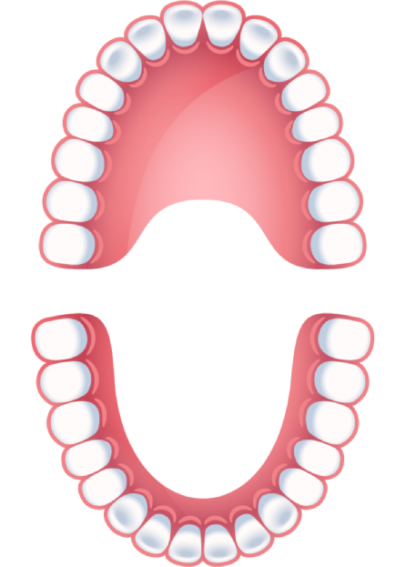

<div class="adultjaw-main">
    <div class="adultjaw-jaw">
        <div class="adultjaw-image-wrapper">
            
        </div>
        
        <div class="adultjaw-tooth {{'tooth-' + i}}" *ngFor="let tooth of teeth; let i=index">
            <tooth
                [id]="tooth.id"
                [label]="tooth.label"
                [checked]="selectedTeeth.indexOf(tooth.id) != -1"
                (onChange)="
                    isItemExist(selectedTeeth, $event) ? unSelectTooth($event) : selectTooth($event);
                    teethChange.emit(selectedTeeth)">
            </tooth>
        </div>

        <div class="adultjaw-smear {{'smear-' + i}}" *ngFor="let smear of smears; let i=index">
            <smear-button
                [id]="smear.id" 
                [label]="smear.label"  
                [selected]="selectedSmears.indexOf(smear.id) != -1"
                (onClick)="
                    isItemExist(selectedSmears, $event) ? unSelectSmear($event) : selectSmear($event);
                    smearChange.emit(selectedSmears)">
            </smear-button>
        </div>

        <div class="adultjaw-tooth adultjaw-special-tooth adultjaw-special-tooth-1">
            
        </div>

        <div class="adultjaw-tooth adultjaw-special-tooth adultjaw-special-tooth-2">
            
        </div>

        <div class="adultjaw-jaw-range adultjaw-upperjaw-rangebtn">
            <range-button #upperrangebtn
                [label]="ranges[10].label"
                [pressed]="isTeethRangeMarked(ranges[10].range)"
                (onClick)="toogleTeethRange(ranges[10].range, upperrangebtn.pressed)">
            </range-button>
        </div>

        <div class="adultjaw-jaw-range adultjaw-bottomjaw-rangebtn">
            <range-button #bottomrangebtn
                [label]="ranges[11].label"
                [pressed]="isTeethRangeMarked(ranges[11].range)"
                (onClick)="toogleTeethRange(ranges[11].range, bottomrangebtn.pressed)">
            </range-button>
        </div>
    </div>

    <div class="adultjaw-range-controls">
        <div class="adultjaw-ranges">
            <div class="adultjaw-range-button" *ngFor="let range of ranges | slice: 0 : 4">
                <range-button #rangebtn
                    [label]="range.label"
                    [pressed]="isTeethRangeMarked(range.range)" 
                    (onClick)="toogleTeethRange(range.range, rangebtn.pressed)">
                </range-button>
            </div>
        </div>
        <div class="adultjaw-ranges">
            <div class="adultjaw-range-button" *ngFor="let range of ranges | slice: 4 : 10">
                <range-button #rangebtn
                    [label]="range.label"
                    [pressed]="isTeethRangeMarked(range.range)" 
                    (onClick)="toogleTeethRange(range.range, rangebtn.pressed)">
                </range-button>
            </div>
        </div>
    </div>
</div>

